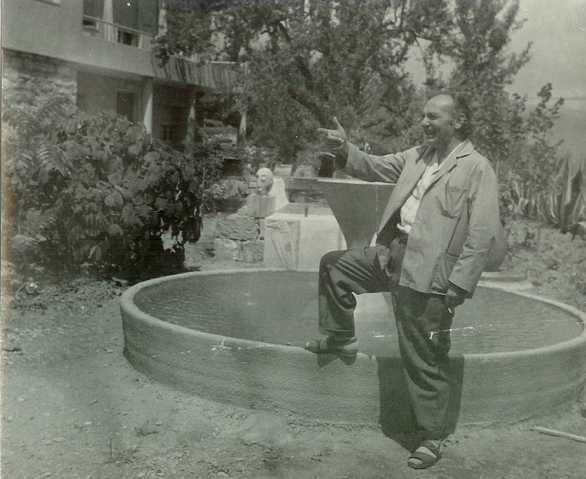
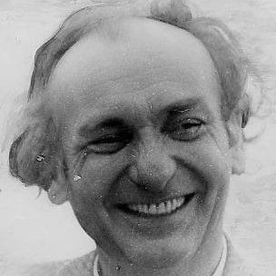

Varedo, 1898 – Diano Marina, 1955
Luigi Maggioni
detto Gino
Inventore e produttore dei primi curvati a freddo,
artista poliedrico precursore del design italiano.
Un uomo del Rinascimento, nel Novecento

Luigi Maggioni, per tutti Gino, nasce a Varedo il 5 maggio 1898. Studia architettura all'Accademia di Brera a partire dal 1915, ma l'anno successivo è richiamato alle armi e inviato al fronte nel Genio Radiotelegrafisti. Rimasto orfano di entrambi i genitori tra il 1919 e il 1920, terminati gli studi si trasferisce presso il fratello Virgilio, medico condotto a San Giorgio su Legnano, e inizia lì la propria attività professionale.
Xilografo per gli editori milanesi
Le sue xilografie, apprezzate per «un segno forte e senza pentimenti», lo portano a lavorare per Sonzogno, l'Istituto Editoriale Cisalpino, la Casa dei Poeti di Varese e soprattutto per L'Eroica di Ettore Cozzani, per cui allestisce un padiglione alla I Biennale di Monza del 1923.
L'Atelier di Varedo e lo stile Déco
Tornato a Varedo, trasforma in studio la piccionaia di un'antica casa di famiglia e si dedica all'arredamento. Con Gaetano Borsani fonda l'Atelier di Varedo: i suoi mobili Déco, realizzati da ebanisti locali, arredano le case della borghesia milanese e vengono esposti alle Biennali di Monza del 1925 e del 1927, oltre che pubblicati su Domus e Casabella. Nel 1927 sposa la pittrice Silvia Zucchinetti, conosciuta a Brera.
Il Congresso di La Sarraz
Invitato da Hélène de Mandrot, rappresenta l'Italia insieme ad Alberto Sartoris al primo Congresso Internazionale di Architettura Moderna (CIAM), nel castello svizzero di La Sarraz, diretto da Le Corbusier — con cui collaborerà ancora nel 1935, alle finiture di una villa della De Mandrot in Costa Azzurra.

In proprio: negozi, stand, brevetti
Sciolto il sodalizio con Borsani, Maggioni lavora in autonomia: arredamenti su commissione, vetrine e negozi a Milano e Roma, stand per la Fiera di Milano e le Galeries Lafayette di Parigi. Il 2 novembre 1937 deposita il brevetto n. 356356 per un sistema di curvatura a freddo del legno compensato, concesso il 28 gennaio 1938.
La fabbrica dei curvati
Apre una propria fabbrica, la Curvati Brevetti Maggioni, con showroom in via Durini a Milano: fornisce, tra gli altri, l'Ospedale Maggiore e l'Università Bocconi, e nell'aprile 1939 espone i suoi mobili in legno curvato al Padiglione Mobilio della XX Fiera di Milano. La morte del fratello Virgilio nel 1941 e lo scoppio della guerra lo spingono a vendere tutto e trasferirsi in Liguria.
Diano Marina e la guerra
A Diano Marina bonifica terreni abbandonati sulle pendici di Capo Berta, fondando il Podere la Pace. Dopo l'armistizio dell'8 settembre 1943 aiuta soldati in fuga a tornare a casa: arrestato dai repubblichini e consegnato alle SS, evade dal carcere di Imperia il 21 aprile 1945.
Gli ultimi anni
Nel dopoguerra continua a inventare: fonda la PAM (1948) e l'IPA, Industria Piastrelle Artistiche (1950), e organizza mostre di pittura per il Comune di Diano Marina. Torna alla scultura in pietra e al monotipo. Muore a Diano Marina il 14 dicembre 1955.
«Gino Maggioni fu un uomo del Rinascimento. Dotato di gusto e sensibilità squisite… conversatore garbato ed efficace, sapeva affrontare gli argomenti più vari, aiutandosi con la matita che correva continuamente su qualsiasi pezzo di carta fosse a portata di mano.»
Terenzio Rossi, 1965
Mobili
Fotografie e ritagli conservati nell'archivio di famiglia: dai mobili Déco disegnati per l'Atelier di Varedo, fondato con Gaetano Borsani, ad alcuni pezzi ancora custoditi in famiglia.
Il periodo Déco
Mobili, ambienti e bozzetti di Gino Maggioni per l'Atelier di Varedo, presentati alle Biennali di Monza del 1925 e del 1927.
Immagini tratte dal libro Osvaldo Borsani, Leonardo – De Luca Editori, Roma 1992 (ISBN 88-7813-386-8).
Il brevetto dei curvati a freddo
Il 2 novembre 1937 Gino Maggioni depositò il brevetto n. 356356 per la curvatura a freddo del legno compensato. Nella propria fabbrica milanese realizzò, tra gli altri, gli arredi per l'Ospedale Maggiore e per l'Università Bocconi.
Sculture
Nell'ultimo decennio della sua vita, a Diano Marina, Gino tornò all'arte figurativa: forme essenziali in creta e in pietra, insieme a monotipi su lastra di zinco.
Disegni
Schizzi e disegni realizzati con stampa ad acquaforte, che documentano il suo processo creativo, dal progetto d'arredo allo studio della figura.
Il Nido, Pian dei Resinelli
Il rifugio di montagna che Gino costruì con le proprie mani nel 1930, al Pian dei Resinelli, anticipando di qualche decennio l'avvento del glamping.